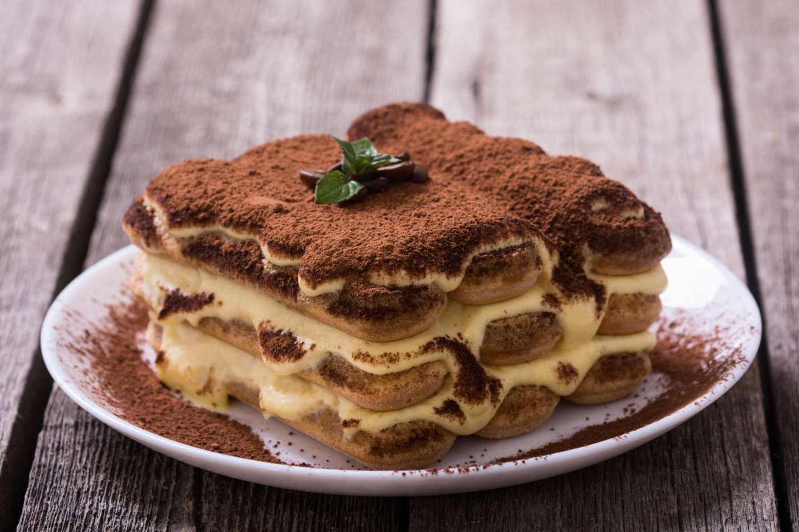

Tiramisù

A delightful italian dessert based on eggs and mascarpone.
Ingredients
- 400g Ladyfingers "Forno Bonomi"
- 500 g Mascarpone cheese
- 300 ml Coffee
- 120 g Sugar
- 4 eggs
- Cocoa Powder
Steps
- Beat egg yolks with sugar until creamy and light. Add mascarpone cheese and stir until homogeneous.
- In another bowl beat egg whiteswith a pinch of salt until firm and incorporate them to mascarpone cream.
- Prepare coffee and let it chill. Dip quickly ladyfinger in the coffee one by one and lay them in a casserole. Cover them with some cream and repeat the layers until you run out of ingredients. Finish with the cream.
- Finish the Tiramisù with the cocoa powder. Let the dessert sit in the fridge for at least 4 hours.